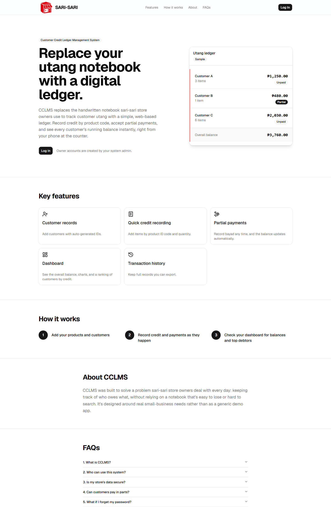
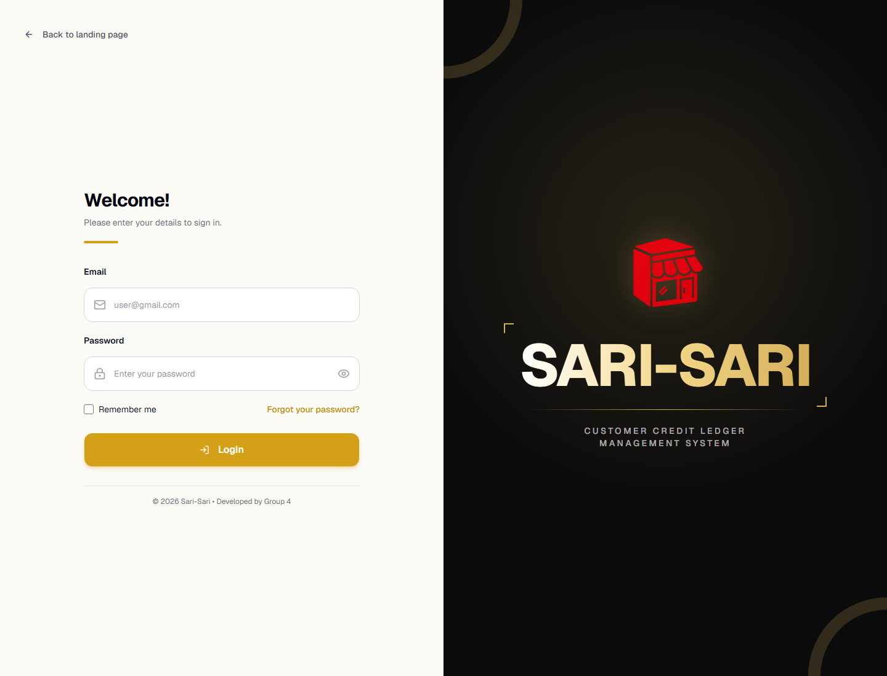
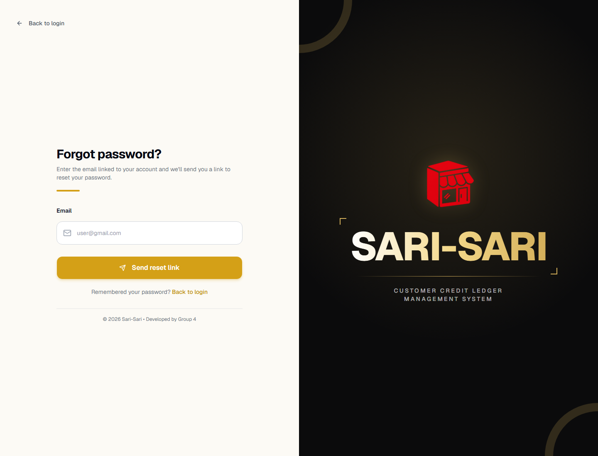

Instructions for store owners and system administrators using the digital customer credit ledger.
Version 1.0 · October 5, 2026 Web application · Desktop and mobile browser
Start here
Using this guide
CCLMS keeps customer balances, product credit, payments, and account activity in one store-scoped system. The features available after login depend on your account role.
Account access: Owner accounts are created by an administrator. If an account is inactive or you cannot access a role area, contact your system administrator.
Screen capture note
Screenshots in this edition were captured from the local app without signing in. Owner and administrator routes require an authenticated account, and the reset-password screen requires a valid recovery link. Those private/token-gated interfaces are described below but are not represented with fabricated screenshots. The landing-page ledger card contains sample display data.
Contents
Public landing page and sign-in
Password recovery
Store-owner workspace
Administrator workspace
Privacy and troubleshooting
Public interface · /
Landing page
The landing page introduces CCLMS and provides the route into the system. Select Log In in the navigation or main call to action to open the sign-in screen. The sample ledger shown here is illustrative and is not a live store account.

Figure 1. Public landing page with sample ledger, key features, and navigation.
Owner access: If you do not have an account, ask the administrator to create an owner account for your store.
Authentication · /login
Sign in

Figure 2. Sign-in page. The right panel contains Sari-Sari branding.
Enter the email address associated with your CCLMS account.
Enter your password. Use the eye control to show or hide it.
Select Remember me only on a device you control.
Select Login. The system opens the workspace assigned to your account role.
Use Back to landing page to return to the public page. If sign-in fails, verify the email/password and ask the administrator to check your account status.
Authentication · /forgot-password
Reset a forgotten password

Figure 3. Password recovery request screen.
From sign-in, select Forgot your password?
Enter the email linked to your account and select Send reset link.
Check your inbox and spam folder for the recovery email.
Open the link promptly. It returns to CCLMS at the reset-password screen.
Enter and confirm the new password, then submit the update.
Link not received? Confirm the address and contact the administrator if mail delivery is still unavailable. Recovery links can expire; request another if needed.
The reset-password form only appears after a valid recovery link establishes a Supabase recovery session, so it could not be captured in this unauthenticated guide build.
Store owner · /owner
Owner workspace
Owner screenshots require signing in with an active owner account. The routes below are protected and redirect unauthenticated visitors to Login.
Dashboard · /owner
Review total customers, overall outstanding balance, active customers, active products, customer-status distribution, credit by month, and the ranking of customers with outstanding balances. Use this as the overview before taking ledger actions.
Customers · /owner/customers
Select Add New Customer, enter the customer's name, mobile number, address, and status, then save. The database assigns the customer ID.
Use the row actions to view or edit customer details and active/inactive status.
Delete is available only when the customer's calculated balance is exactly zero. Active/inactive status does not determine eligibility.
Deletion is a soft delete: credit/payment records are retained, and a deletion event is recorded in Transaction History.
Products · /owner/products
Select Add New Product; enter its name, product ID/barcode, and price. An image is optional.
Select Scan to use the device camera, then hold the barcode steady until the same value is confirmed.
Use the row actions to edit, activate/deactivate, or delete a product. Keep products active if they should be selectable for new credit.
Camera scanning requires browser camera permission and HTTPS, except on localhost. If scanning is unavailable, enter the printed product code manually.
Store owner · /owner/credits
Credit ledger and payments
This protected screen could not be captured without an owner login.
Add credit
Open Credit Ledger and locate the customer card or table row.
Select Add Credit for that customer. Inactive customers cannot receive new credit.
Choose an active product from the list or use Scan. The customer must have at least one active product available.
Enter the quantity and review the subtotal.
Select Add Credit to save. The balance and ledger update after a successful save.
Record a payment
Open the customer details from their card or select View in table view.
Use Pay Full to pay the displayed balance, or enter a partial amount and select Record Payment.
Payments cannot exceed the current outstanding balance. Review the updated balance and payment history after saving.
Use the search box to find a customer by name or ID. The card/table control changes how customers are displayed.
Store owner · /owner/transactions
Transaction history
This protected screen could not be captured without an owner login.
Search by transaction ID, event type, customer, or details.
Use the date filter to narrow results to a particular day.
Select Export Excel to download the currently filtered records.
Customer deletion events appear here with the saved customer name and ID. Deleting a customer does not remove earlier financial history.
Profile · /owner/profile
Open the account menu at the bottom of the owner navigation and select Profile. Update your profile details, avatar, or password using the forms provided. The account menu also toggles light/dark mode and provides the sign-out action.
Administrator · /admin
Administrator workspace
Admin screenshots require an active administrator account. The routes below are protected and redirect unauthenticated visitors to Login.
Dashboard · /admin
Review owner-account totals and active/inactive account summaries. Use the sidebar to navigate between admin tasks.
Owner Management · /admin/owners
Create and manage store-owner accounts. Verify the account details and status before saving. Deactivating an owner prevents access until the account is reactivated.
Login Audit · /admin/logs
Review administrator login activity and related audit details. Use the available filters and table controls to locate entries.
Landing Page · /admin/landing
Manage the public landing-page content shown to visitors. Save and then open the public page to confirm the published content.
Access control: Admin routes require a signed-in user whose profile role is admin and status is active. Owner routes require the corresponding active owner role.
Good practice
Data safety and troubleshooting
Confirm the customer and product before saving a credit entry or payment.
Never share your password or recovery link. Sign out on shared devices.
Keep customer accounts inactive rather than deleting them if a balance remains unsettled.
If a save fails, read the displayed error and contact the administrator with the message. Do not share passwords, tokens, or SMTP credentials.
If the dashboard or ledger cannot load, check your connection and account status; the administrator may need to review database permissions.